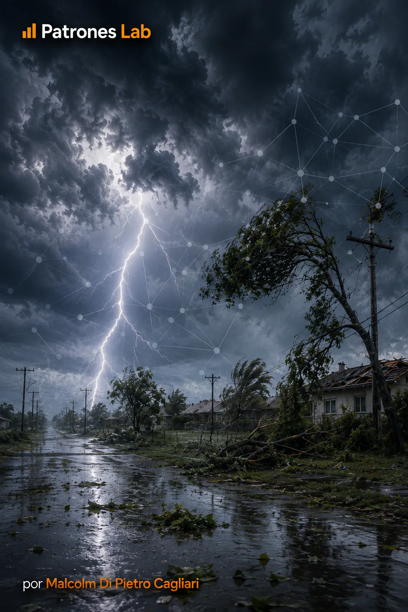

MACHINE LEARNING · PROJECT 04

Project 16 · Machine Learning
Neural Networks · Weather Event Damage
Classification model for estimating economic damage in weather events, comparing logistic regression with a neural network using NOAA Storm Events data from 2010–2025.
CONTEXT AND OBJECTIVE
The project uses NOAA Storm Events to classify whether a weather event records economic damage. Comparing logistic regression with a neural network tests whether a nonlinear model improves detection while retaining an interpretable baseline.
DATA AND DIAGNOSIS
The dataset combines 1,037,691 events from 2010–2025 and uses 19 temporal, geographic, and meteorological predictors. Evaluation preserves time: 2010–2021 for training, 2022–2023 for validation, and 2024–2025 as the reserved final test.
DELIVERY AND LEARNING
On the 2024–2025 test set, the neural network improves on logistic regression in ROC AUC (0.9324 vs. 0.8961), PR AUC (0.8004 vs. 0.6691), and positive-class F1 (0.6991 vs. 0.6042). Results are preliminary because the project is still in progress.